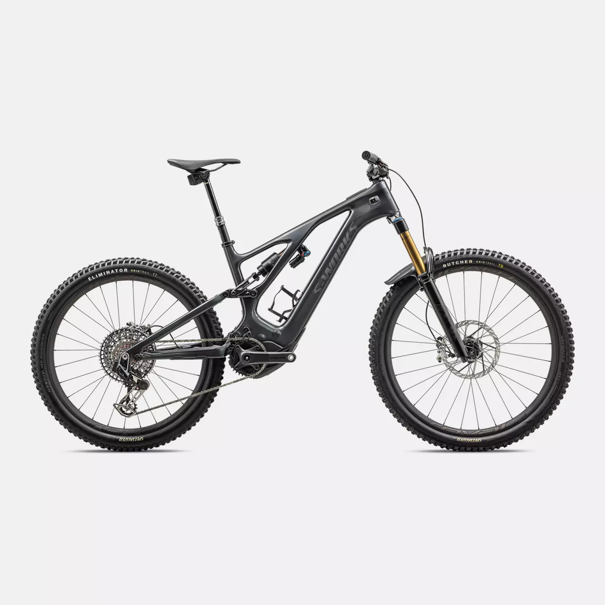
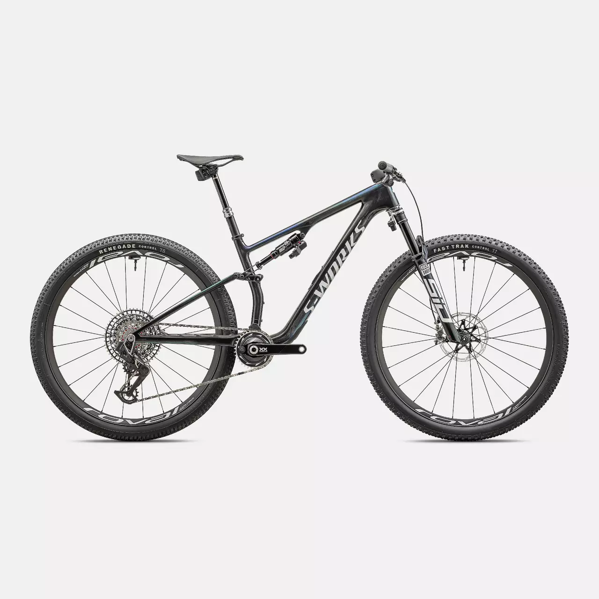
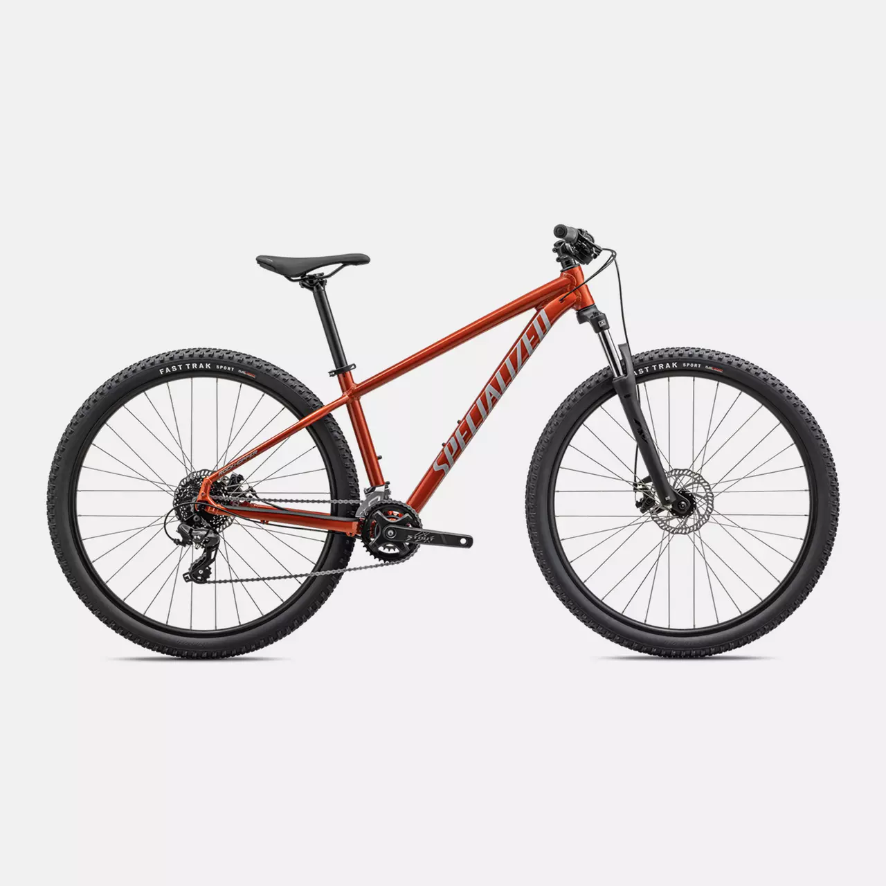

SPECIALIZED
Specialized es una de las marecas mas conocidas en el mercado de bicicletas, de gama de entrada o media, tambien ceunta con una marca de gama alta conocida como s-work
Specialized es una de las marecas mas conocidas en el mercado de bicicletas, de gama de entrada o media, tambien ceunta con una marca de gama alta conocida como s-work
Su gama de bicicletas de ruta esta diseñada para diferentes tipos de presupuestos, desde cuadros de aluminio o los nuevos cuadros de carbono que son muy ligeros.
al igual que la gama de ruta, las bicicletas de montaña tambine cuentan con un gran desarrollo para las diferentes modalidas y exigencias de cada una.
| Mas nueva | Mas cara | Mas barata |
|---|---|---|
|  |  |  |
| S-WORKS TURBO LEVO | S-WORKS Epic 8 | Rockhopper 29 |